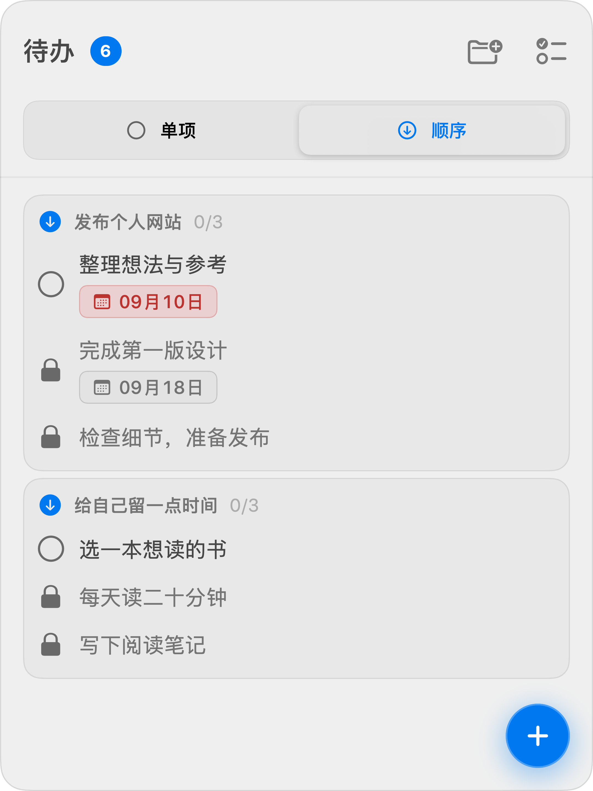

随手记，随时做
点击菜单栏就能添加单项任务。为它安排日期，按项目归类，完成后一勾收好。

点击菜单栏就能添加单项任务。为它安排日期，按项目归类，完成后一勾收好。
把一件事拆成顺序清单。完成前一步，下一步才解锁，每一步都能设置自己的日期。
无需注册，离线也能使用。任务保存在本机，没有广告，也没有分析或追踪 SDK。
LESS PLANNING. MORE DOING.
不必为了记下一件事，打开一整套工作台。单项记录日常，顺序清单推进计划。ThenDo 安静地待在菜单栏里，在你需要时，给你一个清楚的下一步。